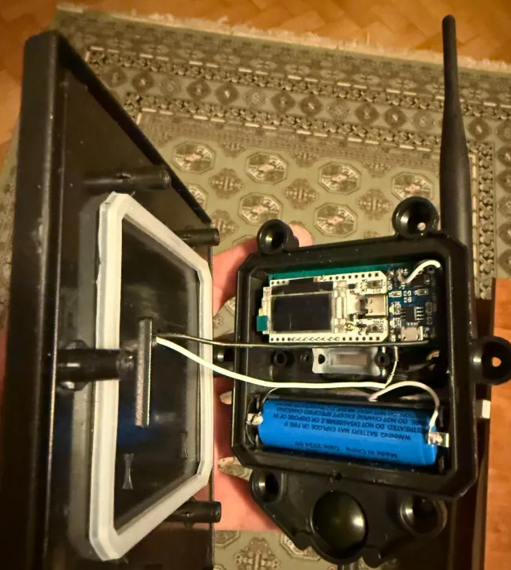
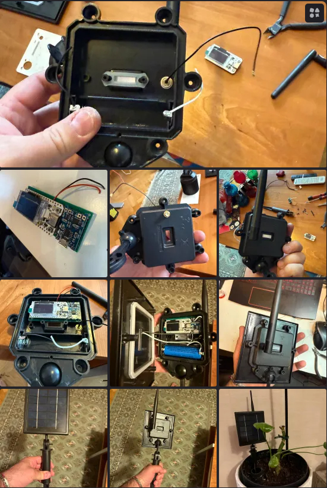

Från mjölk till Meshtastic
Hur en kväll på ICA Maxi slutade med en LoRa-nod i trädgården
Medlemmarna i Jönköping Meshtastic-gruppen har haft fullt upp med att experimentera med solcellsdrivna noder. Nyligen delade Gabriel (SA7GAM) med sig av en riktigt inspirerande – och smått oväntad – upplevelse. Han inleder sin berättelse med orden: "Handla aldrig på ICA Maxi... eller jo, gör det – men var beredd på att bli Meshtastic-inspirerad." Här är hans historia:
Allt började som en helt vanlig kvällshandling på ICA Maxi. Du vet, den där sortens tripp där man bara ska köpa mjölk, men plötsligt står man där med en full korg och undrar vad som just hände.
Mitt i detta konsummörker skymtar jag en korg full av solcellsdrivna trädgårdslampor på rea – 179 kr styck. Min hjärna går direkt in i hackermode: “Ett 18650-batteri, en laddkrets och en ganska snygg solpanel… för 179 spänn?!” Klart man plockar en.
Men som alltid, när jag köper något nördigt, dyker frugan upp som hobbyekonom och balanserar mitt köp med “nödvändiga saker” som disktrasor i bambu eller ännu en ugnsform. Fair enough.
Väl hemma öppnar jag lampan, glad som ett barn på julafton. Och där ligger den – ett 18650-batteri i en prydlig kapsling. Men vad ser jag i det andra facket? Ett... tomrum! Cue Meshtastic-hjärncellen som börjar rycka i ögonbrynet.
Fram med min lilla Heltec V3 – och tro det eller ej – den glider in i utrymmet som om den var född där. Efter lite mätande inser jag att Heltec + en TP4056-laddmodul för batteriet skulle kunna få plats på ett hålkort, 30x70 mm. Och mycket riktigt – det passade som handsken!
Men så kom den stora frågan: “Vart sätter jag antennen?”
Roligt nog hade tillverkaren redan förberett ett litet hål i kapslingen, med en sorts “China-dragavlastning” (även känd som “knut på sladden och håll tummarna”). IP44-klassningen stirrade på mig från en klisterlapp, men jag kände direkt: detta är ingen regnälskare.
Så jag slängde in en SMA-kontakt där sladden satt, lödde klart allt, tätade som en norrländsk bastudörr – och voilà!
En 100 % tät Meshtastic-trädgårdslampa var född. En lysande liten vattensäker nod (nästan IP66, vågar jag påstå) – redo att lysa upp JKPG och snacka LoRa.
Så… handla aldrig på ICA Maxi – om du inte vill råka komma hem med ännu en briljant (och blinkande) idé.
Här kommer bilderna. Nu är det bara att vänta på nästa regniga dag och se om lampan fortfarande blinkar... eller skickar nödsignal från under vattenytan.
Tack Gabriel!! Så ja – var modig, låt dig inspireras, och bygg de där noderna!